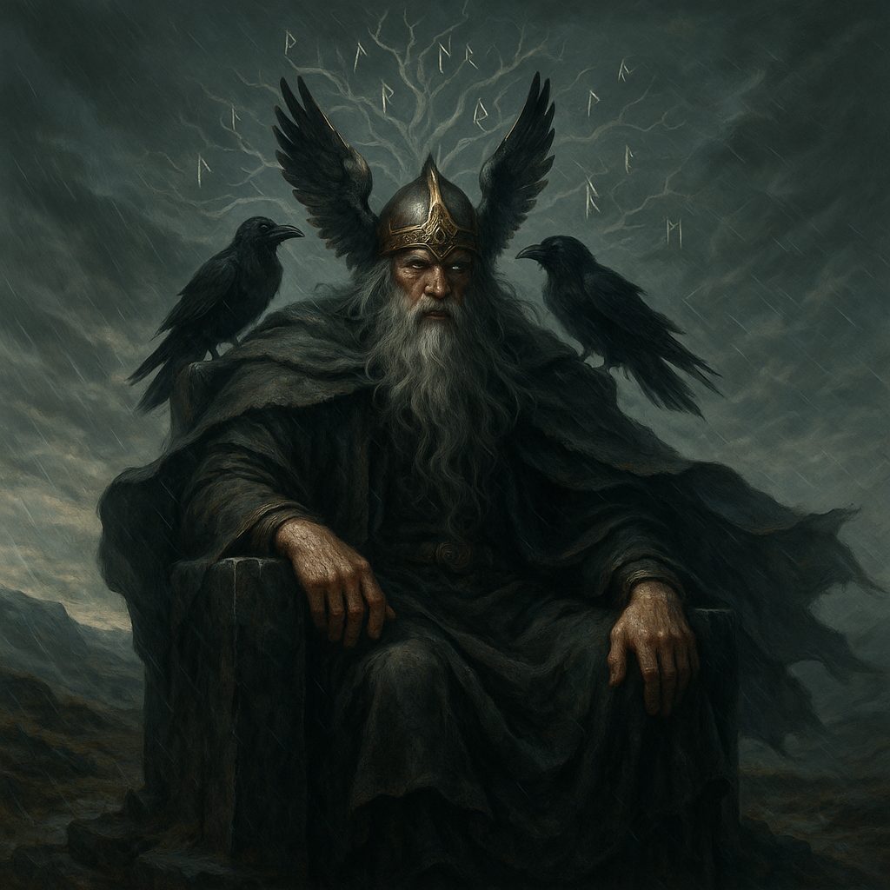

THUMB – The Finger of Fate

Cada dedo representa un símbolo, una historia, un poder. Inspirados por figuras míticas e históricas, los anillos revelan más que estilo: revelan propósito. Descubre el espíritu detrás de cada dedo y el mensaje que lleva consigo.